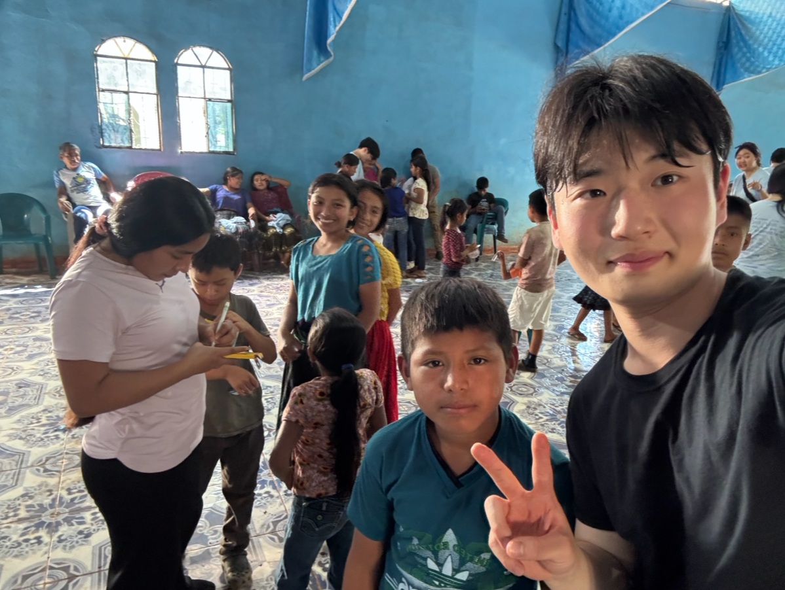

A Community Visit
One experience I want to share is a community visit where I spent time with children and families in a bright gathering space. The day reminded me that small interactions can matter a lot. Taking photos, talking with people, and simply being present helped me understand how important connection can be outside of a classroom.
Outside

Inside

Experiences like this make me interested in organizations that focus on young people and education, such as UNICEF education programs.